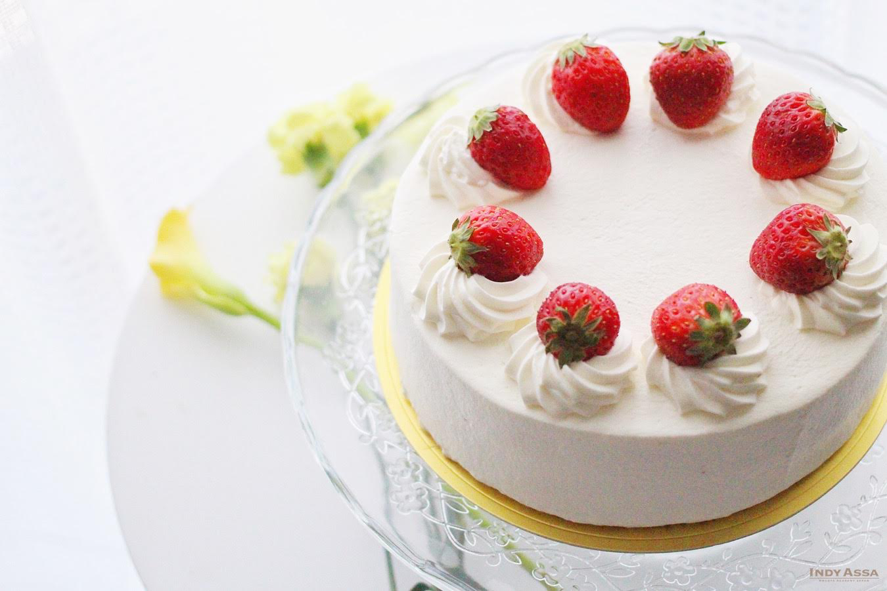

My Favorite Recipes
Browned Butter Chocolate Chip Cookies
My go-to cookie recipe that I will die behind! What makes these cookies special is the browned butter that helps the vanilla and chocolate flavors stand out. They are bold and never fail to impress guests.
View RecipeMac and Cheese
I have used this viral Mac and Cheese recipe countless times. Every holiday, every social gathering, and even familiy dinners, this recipe will be there. This is Chef Tini's popular recipe, that I've slightly altered to taste more impressive with the addition of smoked gouda.
View RecipeKimchi Fried Rice
This is the easiest and tastiest dinner, and makes for good leftovers. My favorite part about this recipe is I barely have to buy any produce since all of the veggies are in the Kimchi. I also like to meal-prep this dish, since It can be frozen and microwaved easily.
View RecipeCarne Asada
When I first found out how easy it is to make carne asada, it immedietly became part of my rotation of frequent recipes. I'll never pay extra at Chipotle again! Its great on it's own, and pairs great with bowls, burritos, tortas, even on top of a plate of fries.
View RecipeSoy Garlic Fried Chicken
This is a recipe I totally stole from my mom... It's our take on Korean Fried Chicken, but instead of using drumsticks, this recipe uses chicken thighs for that extra juiciness. They're light and crispy and coated in a delicious aromatic garlicy soy sauce.
View Recipe
Kimchi Jigae Stew
This is my absolute favorite on a cold day, or if I'm at home sick. It's packed with probitics and everything thats good for you, and the spiciness does wonders for clogged sinuses. I love to fry my kimchi in the pork-belly fat to release and deepen the flavors. I wish I could eat this everyday.
View Recipe